| 日付 | 2014年10月19日（日） |
|---|---|
| 山域 | 御坂･天子山塊 |
| メンバー | 家族（妻、長女・3歳、長男・1歳） |
| 山行形態 | 子連れ日帰り |
| アクセス | 車 |
| ルート (Map) | すずらん群生地駐車場 (8:49) - (9:17) 稜線分岐 - (9:39) 府駒山 - (10:28) 釈迦ヶ岳 (11:23) - (12:16) 府駒山 - (12:38) 稜線分岐 - (12:59) すずらん群生地駐車場 |
釈迦ヶ岳は御坂山塊の北部にある尖峰である。
河口湖方面からだと奥の方にあるためその姿を見ることはできないが、
北側の中央道から見ると良く目立つ山だ。
久々に富士山の展望を求めて行ってみることにする。
すずらん群生地近くにある登山口に到着。標高1350m。
登山口のすぐ前に小さな駐車スペースがある。
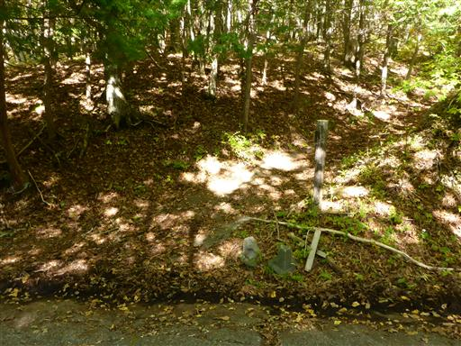
明るい樹林帯を登っていく。この辺りは落葉広葉樹林帯だ。
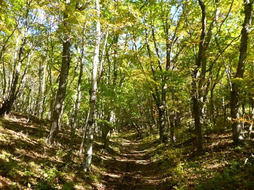
今日はトレーニングのためと言って、妻が息子を背負って登っている。
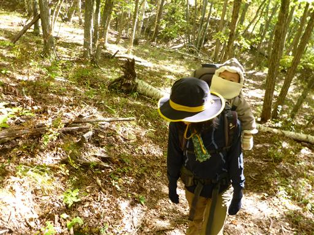
一登りで稜線に到着。
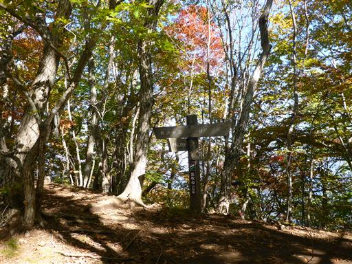
ここからは歩いていて気持ちが良い尾根道だ。
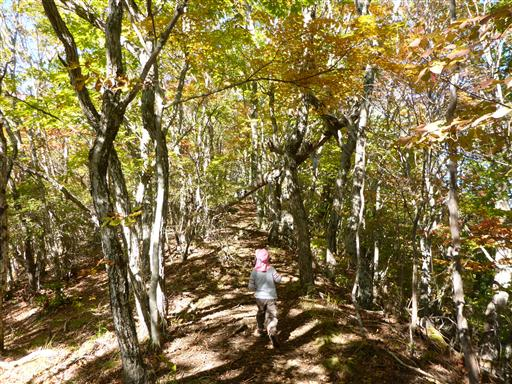
ちょうど紅葉が見ごろだ。高山帯の紅葉は見ごたえがあるが、
こういった素朴な紅葉も美しい。
紅葉を期待していたわけではなかったので、これはうれしい誤算だ。
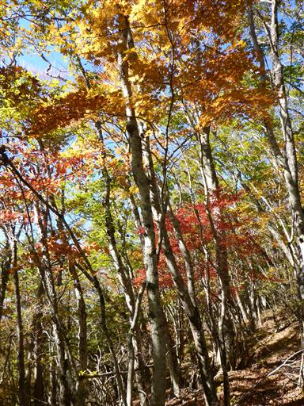
府駒山に到着。釈迦ヶ岳までで唯一名のあるピークだが、それ以外にも多くの小ピークがある。
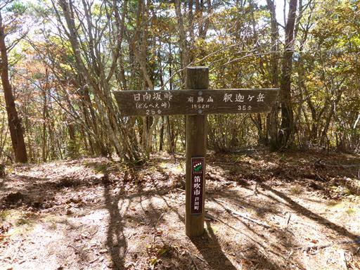
釈迦ヶ岳の尖峰が木の向こう側に見えてきた。
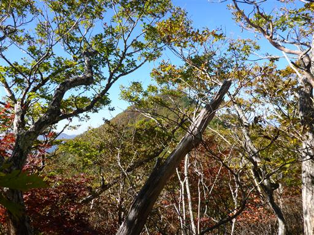
途中で展望が少し開ける。遠くに八ヶ岳が見えている。
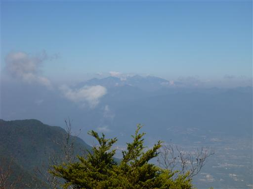
釈迦ヶ岳に至る急斜面に取りつく。娘は手を使って頑張って登っている。
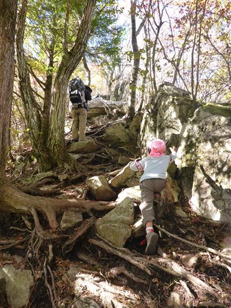
ロープがある場所も突破。難所もだいぶ越えられるようになってきた。
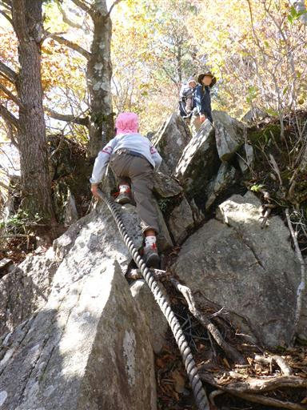
再び視界が開ける。辺りは紅葉が美しい。
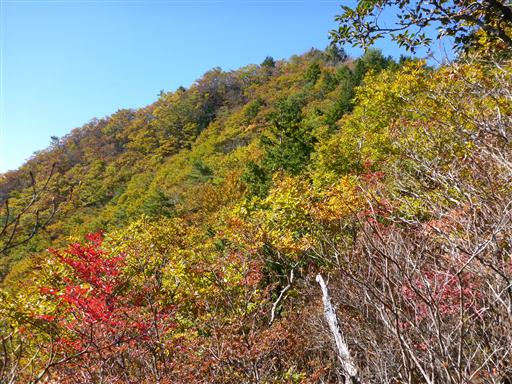
富士山は頭だけが見えている。
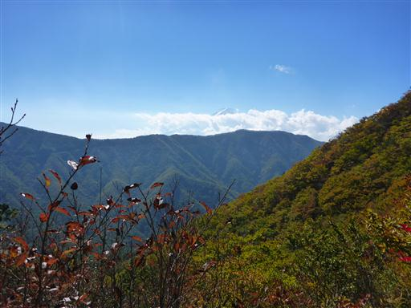
山頂の一角に到着すると、空が広くなる。
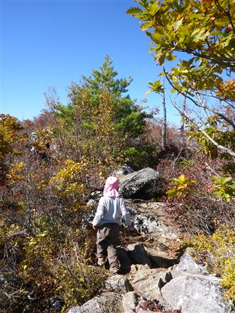
岩がゴロゴロした山頂部を歩いていくと、釈迦ヶ岳山頂に到着する。標高1641m。
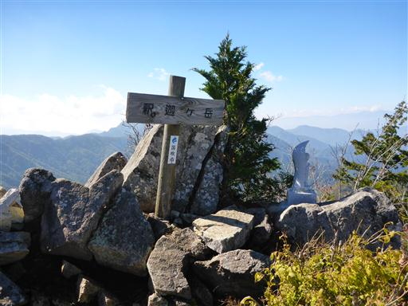
山頂には地蔵が祀られている。
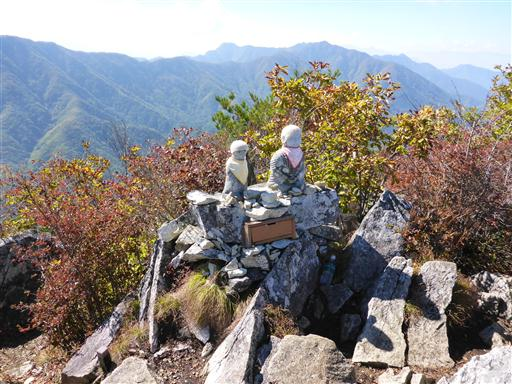
御坂の山々を望む。稜線上に御坂山塊最高峰の黒岳と、遠くに三ツ峠山が見える。
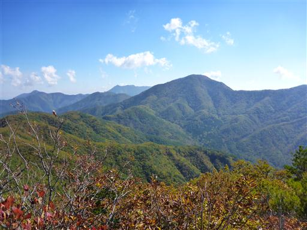
こちらは十二ヶ岳～節刀ヶ岳。今年、息子を背負って登った山だ。
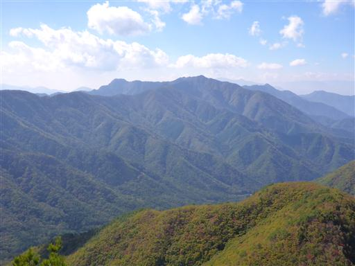
富士山は相変わらず頭しか見えない。初冠雪した富士の姿を望みたかったのだが…
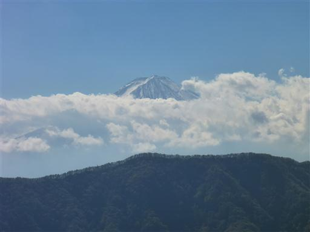
南アルプス。こちらはまだ黒々としている。
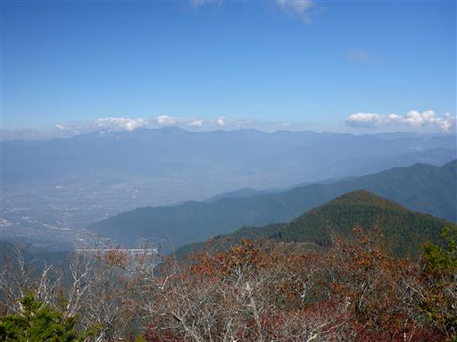
尖峰ゆえに足元は急な崖だ。
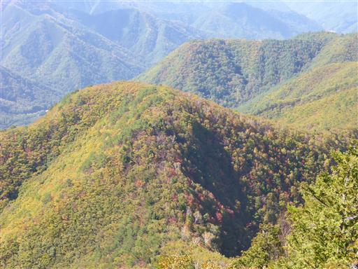
山頂を見渡した感じ、この岩が最高地点のように見える。
狭い岩だが登ってみる。
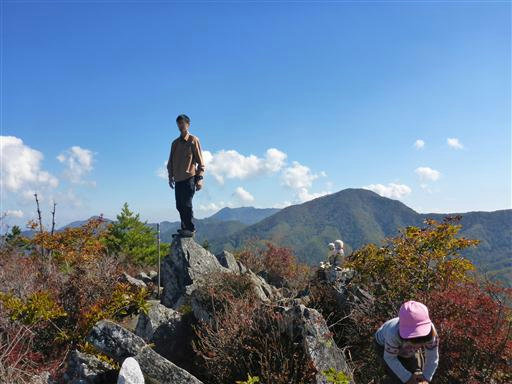
息子は今日も岩登りを楽しんでいる。崖のある山なので目を離すことができない。
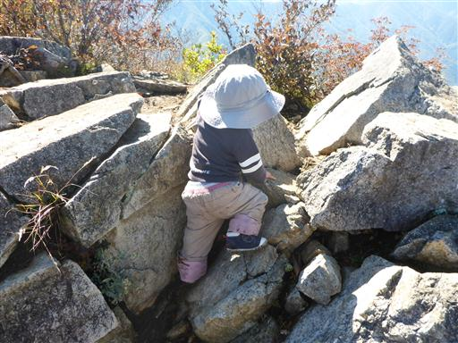
昼食後に下山開始。元来た急斜面の道を下る。
下りは息子の担ぎ役を交代だ。
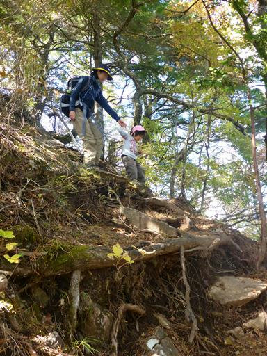
ロープ場も慎重に下る。
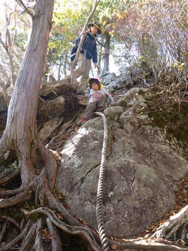
下の方はまだ黄葉していないが、光が差して美しい。
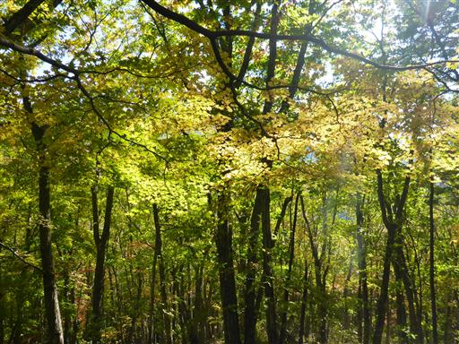
無事、駐車スペースまで下山する。
富士山の姿はあまり見えなかったが、全般的に山頂からの展望がよく
登山道の樹林帯が美しい山だった。
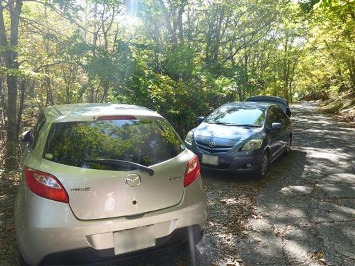